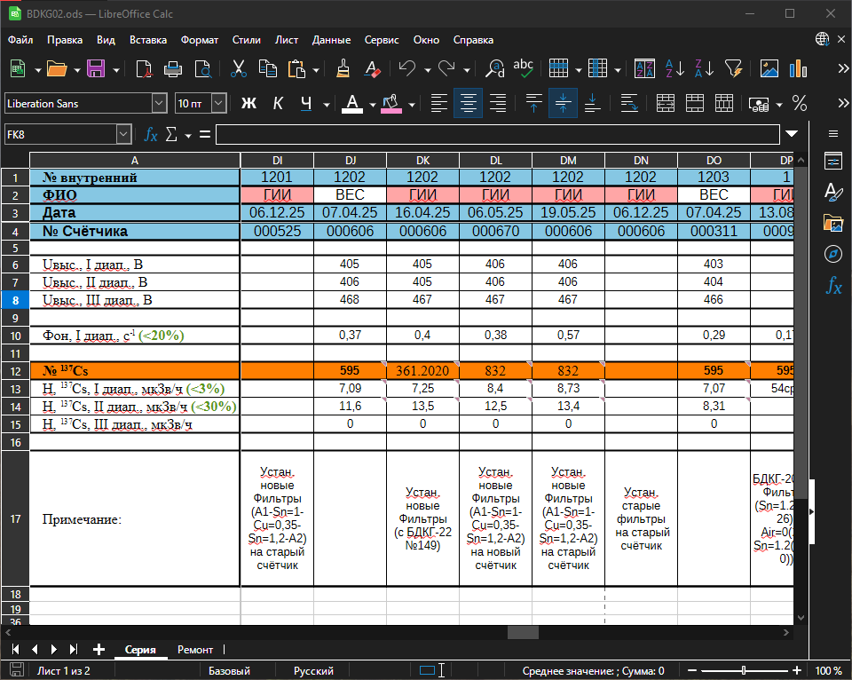
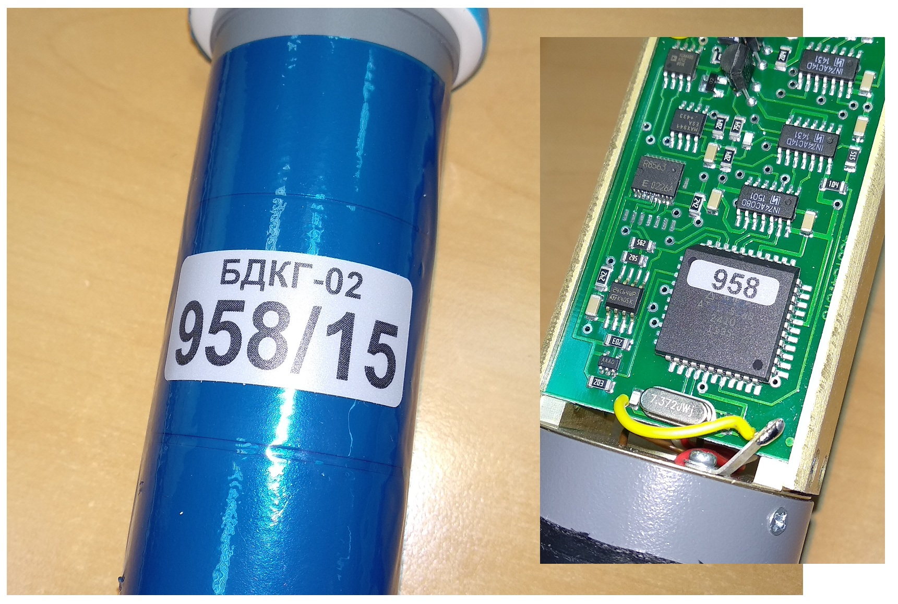
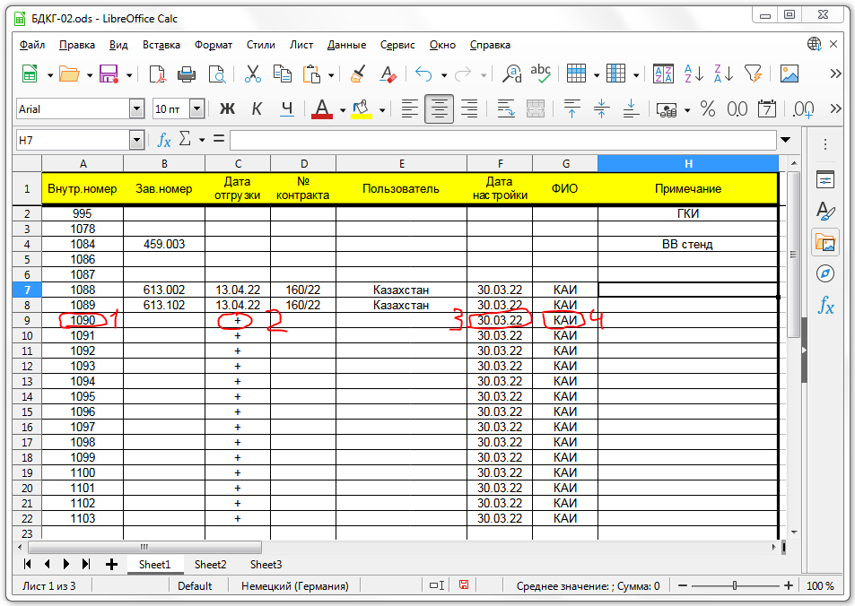
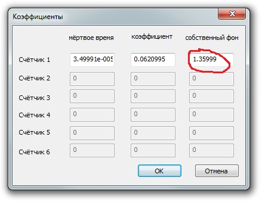
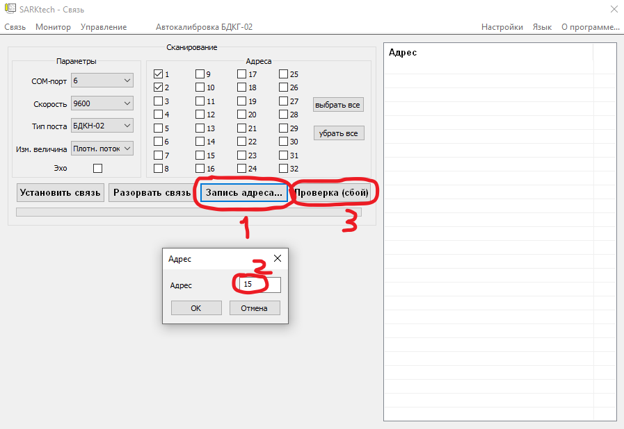
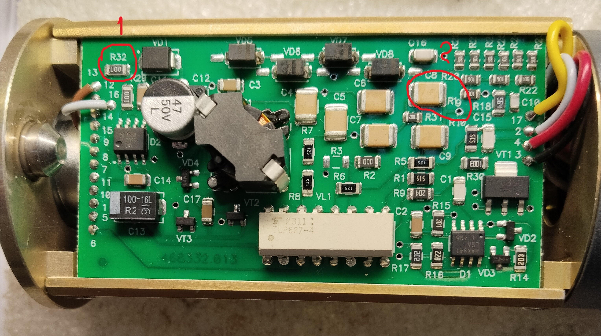
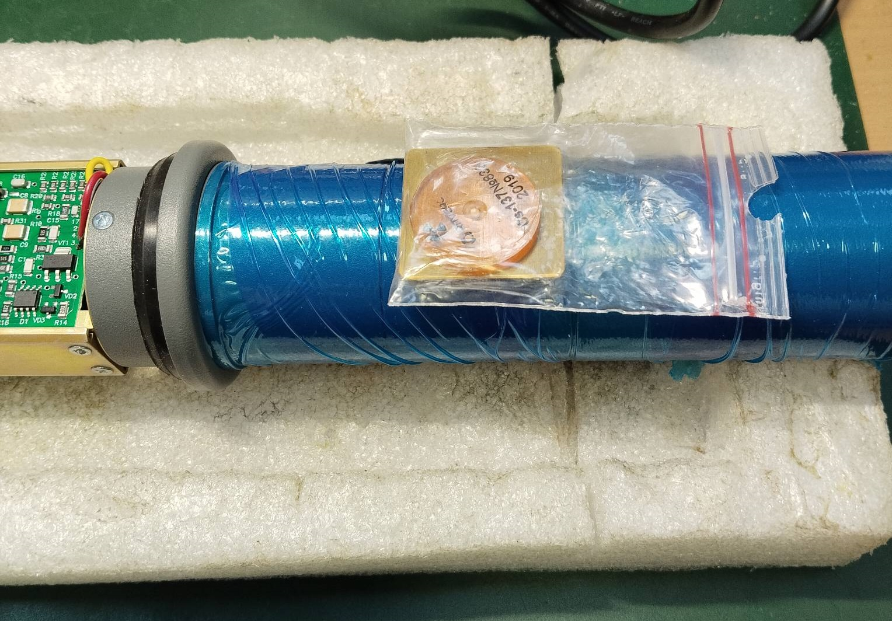
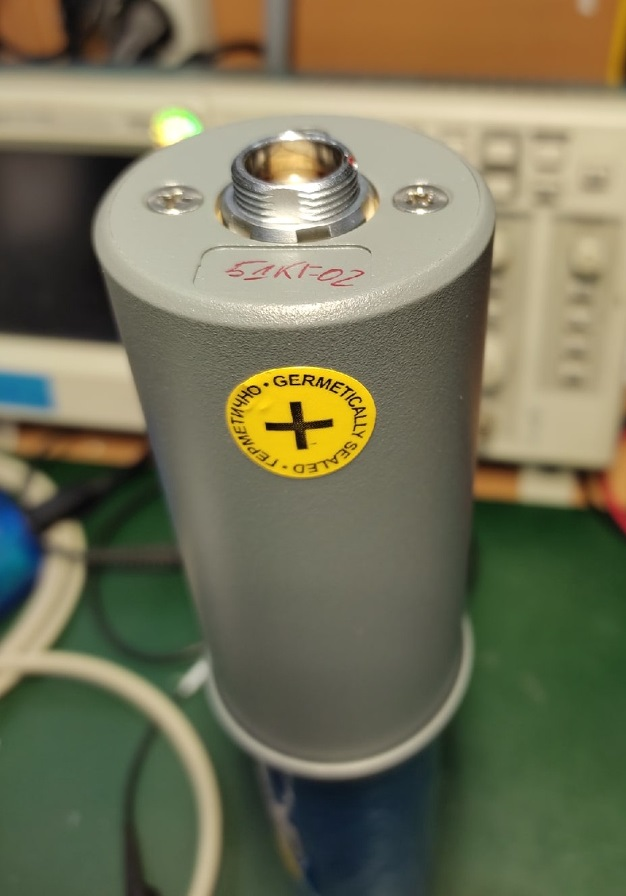

БДКГ-02
РЕМОНТ
Как поменять напряжение 100 → 200 вольт
Как сделать калибровку по фону и снять градуировочное число
Как поменять напряжение 100 → 200 вольт
Как сделать калибровку по фону и снять градуировочное число
- Приклеить наклейку с номером на микроконтроллер расположенный на процессорной плате так, чтобы не закрыть его название
- Приклеить на прибор стикер с указанием номера прибора и его адресом (например: 958/15, где 958 — номер прибора, 15 — адрес)
Клеить наклейку с номером на корпусе лучше с противоположной стороны от наклейки на
контроллере, тогда как бы БД не лежал на столе, всегда будет виден его номер
- В электронный перечень записать внутренний номер (1), поставить "+" в графе "Дата отгрузки" (2), дату настройки (3) и ФИО (4)
- Заполнить базу настройки
(вкладка "Серия") в соответствии с требуемыми параметрами

На боковых пластинах, которые держат платы, располагается жёлтая наклейка с язычком, на котором написан номер счётчика (к примеру 000582) Гамма-16 установленного в блок. ОБЯЗАТЕЛЬНО записать этот номер в базу настроек! - Подключение БДКГ-02 к ПК производится с помощью адаптера USB-RS485 (Titan USB-COMi-SI-M, MOXA UPort1150 с внешним питанием или адаптер USB-БД RS485)
- Работа с БДКГ-02 осуществляется с помощью программы SARKtech.


-
Если БД не подключается
При первом включении БДКГ-02, в течении 1-2 минут происходит запись и чтение данных из EEPROM. В это время блок не активен (невозможно к нему подключиться и записать адрес, не подаётся частотный сигнал на раскачку высокого напряжения)
- Записать [1] соответствующий стикеру адрес [2] БДКГ-02 (в большинстве случаев он должен быть уникальным, с 1 по 31)
- Перейти на вкладку "Управление"
-
Нажать кнопку «Статус» в правой части вкладки. При первом включении могут появиться ошибки в «канал 1» для статусов «общий» и «ЕЕПРОМ» - это означает,
что блок не проинициализирован. Для инициализации блока требуется записать в него всю доступную информацию (кнопки выделенные жирным шрифтов) и перезапустить его,
сбросив питание. Описание пунктов для инициализации БДКГ-02:
- «Дата (запись)…» - записывает текущие дату и время (взятые с настроек ПК) в блок. Возможно их изменение перед записью.»
- «Время инт.(запись)…» - записывает время интегрирования БДКГ-02. Для настройки и калибровки установить значение равное 254. Для работы в составе СРК-АТ2327 или как отдельного интеллектуального блока установить значение равное 5.
- «Пороги (запись)…» - записывает пороговые значения мощности дозы в нЗв/ч, при достижении которых срабатывает (включается сигнал логического “0”) на линиях WL (work level - рабочий порог) и DL (danger level - аварийный порог). Используются для подачи сигналов для УС-АТ991 напрямую, миную обмен данными по RS485. По умолчанию записываются рабочий порог равный 500 нЗв/ч, аварийный – 1000 нЗв/ч (=1мкЗв/ч). После записи порогов проверить их работоспособность с помощью специальной коробки (для подключения, где распаяны светодиоды по линиям WL и DL) и кнопок «Контроль…» расположенных внизу каждого порога.
- «Ид.данные (запись)…» - записывает идентификационные данные БДКГ-02 такие, как внутренний номер (присваивается УРИиР), номер поставки (он же номер СРК-АТ2327 слева от точки) и серийный номер (номер устройства в составе СРК-АТ2327 справа от точки). Для дальнейшей работы присвоить блоку внутренний номер с стикера или наклейки на микроконтроллере.
- «Упр. (запись)…» - установка настроек работы блока таких, как включение или выключение счётчика, установка определённого диапазона вручную или автовыбор диапазона и др. В основной работе с БДКГ-02 не используется.
- «Коэф. (запись)…» - записывает калибровочные коэффициенты в зависимости от выбранного диапазона. Для настройки в 1-ом диапазоне значение коэффициента собственного фона установить равным 0.5.
- «Скорость (запись)…» - записывает скорость обмена БД по линии RS485. По умолчанию установлена 9600. Для инициализации достаточно просто подтвердить установленную скорость.
- «Сброс истории» - сбрасывает накопленные истории (10-минутные и превышения порогов). Для инициализации подтвердить сброс выбранных историй.
- «Выключение» - переводит БДКГ-02 в спящим режим. Дальнейший обмен данными прекращается до полного пересброса питания.»
 Обязательно после контроля прочитать записанные пороги и удостовериться в соответствии их с заданными.
Обязательно после контроля прочитать записанные пороги и удостовериться в соответствии их с заданными.
После записи каждого типа данных желательно проверить корректность сохранённых данных нажатием соответствующей кнопки с надписью (чтение)
При невозможности подключиться к БДКГ-02 проверить отсутствия сбоя (3). Если после нажатия не появиться окно ошибки подключения,
значит блок находится в 0-ом адресе. Адрес после включения блок считывает из EEPROM

Пароль для входа на одну вкладку – текущее время (к примеру 1145).
Пароль для входа на текущую сессию (покуда открыта программа) – текущее время + пробел + 5555 (к примеру 1145_5555)
Пароль для входа на текущую сессию (покуда открыта программа) – текущее время + пробел + 5555 (к примеру 1145_5555)
- Проконтролировать ток потребления ≈ 8 мА.
Ток можно измерить по падению напряжения на резисторе R32=10 Ом (1) платы устройства управления (10Ом * 8мА = 80мВ)
- В программе перейти на вкладку «Монитор». Мультиметром (постоянное напряжение свыше 400В) проверить значение высокого напряжения на конденсаторе C8 (2) платы устройства управления в трех диапазонах (1-ый ~400В, 2-ой ~400В, 3-ий ~460В). Переключение диапазонов осуществляется в нижней части окна программы. Полученные значения записать в базу настроек
- Проконтролировать показания скорости счёта на фоне (≈0,3-0,7 с-1) со статистической погрешностью (коэффициентом вариации) не более 20% и записать значение в базу настроек
- Положить источник гамма-излучения 137Cs активностью 105 Бк между двух меток («вырезанные» полосы на корпусе) центров детектора. Перед началом измерений нажать кнопку «Сброс». Записать полученные скорости счёта при достижении указанной в таблице статистической погрешности (коэффициента вариации) для каждого из трех диапазонов в базу настроек
- Отдать БД на сборку стаканов
- Отдать собранные БД на линейку


После линейки:
- Проконтролировать градуировочные точки во всех диапазонах в журнале градуировки БДКГ-02
-
Если у БДКГ-02 какие-либо точки вышли за пределы границ допускаемой относительной погрешности (15%) или очень близко к ней (~10%):
- для 2-го и 3-го диапазона можно попробовать изменить напряжение
- для 2-го диапазона, при заниженных (~60мкЗв/ч) показаниях в точке 70мкЗв/ч проверить счётчик Гейгера-Мюллера (возможно потребуется замена);
- для 3-го диапазона при значительно заниженной скорости счёта проверить работоспособность транзистора VT1 (BSP295) платы устройства управления
- Мёртвое время 1000 < МВ < 1500
- Коэффициент 1300 < К < 2000
- Проверить БД на герметичность и зафиксировать показания давлений в таблицу герметичности. После успешного прохождения наклеить круглую наклейку "ГЕРМЕТИЧНО HERMETICALLY SEALED +" сбоку корпуса напротив места для наклейки
- Блоки прошедшие линейку разместить в дали от рабочих мест с источниками и произвести калибровку фона (см.пункт ниже)
- Снять градуировочное число (Как сделать калибровку по фону и снять градуировочное число)
- Подготовить БД к работе в СРК
- При поставке БДКГ-02 как отдельного (или интеллектуального) блока детектирования убедиться в отсутствии ошибок БД (в SARKtech, во вкладке «Управление», кнопка «Статус»). При наличии в заказе кабеля или переходника ОБЯЗАТЕЛЬНО подключить БДКГ-02 с помощью поставочного кабеля к SARKtech для проверки работоспособности всего узла
Значения коэффициентов в 3-ем диапазоне для БДКГ-02 с хорошим счётчиков Гейгера-Мюллера:
